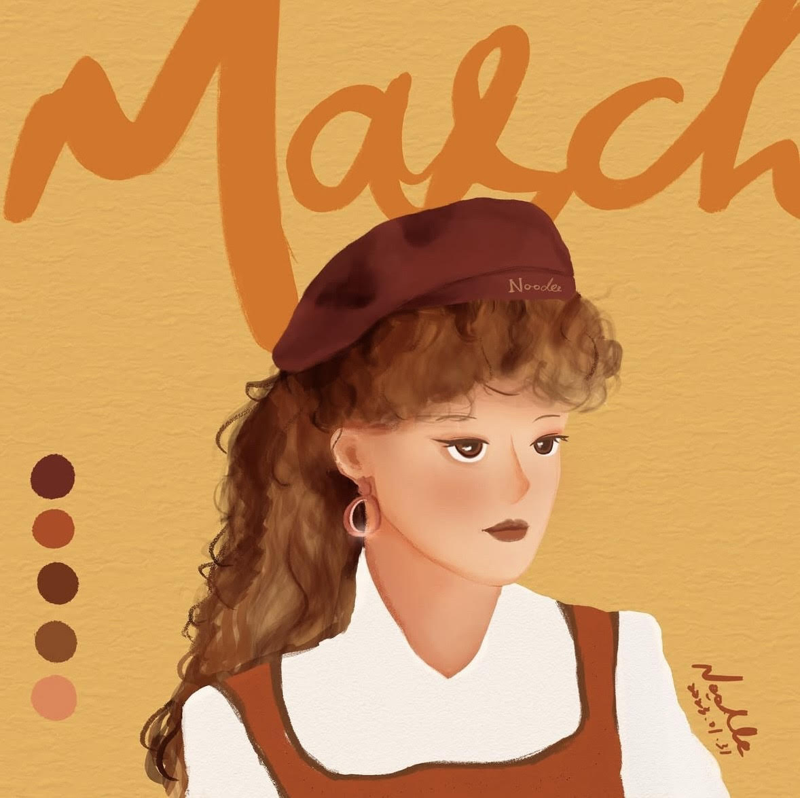

嗨嗨～
嗨嗨～
我是 Noodle
一位熱愛插畫的小小創作者，喜歡學新技能、嘗試不同畫風，把可愛和故事變成畫面 🎨✨
Introduction
我來自台南！一座有著溫暖陽光和甜甜味道的城市☀️🍧目前正在常下雨的台北念碩士 ，畫圖是我每天最期待的事！
Introduction
我喜歡用插圖紀錄我的生活！正在學習怎麼把情感、想法和角色畫進大家心裡 ❤️🌈 我相信，插畫的力量不只是讓畫面變美，而是讓觀者感受到被理解、被療癒的那一刻。
Creative Belief
創作對我來說，是紀錄生活的方式，也是表達情感的語言。不論是溫暖的角色、俏皮的構圖，還是柔和的配色，我都希望能把日常裡的小小感動，轉化成能共鳴的畫面。 畫畫讓我認識自己，也讓我更靠近世界。希望透過這些作品，讓你看見不只是圖，也看見一份溫柔的心意 💛🎨我把創作當成探索的旅程，每一次畫畫都是嘗試、發現和成長的過程。我不害怕風格的變化，因為每一次變化都讓我更靠近真正的自己。
Experience
-
2022–Present
Freelance Illustrator (Books, Editorial, Social Media) -
2022–Present
Etsy Shop Owner (Watercolor Prints & Stickers) -
2021–2022
Creative Team - PT Kanaan Global Indonesia
Expertise
Illustration, Character Design, Editorial Graphics, Storytelling, Branding Visuals
Hard Skills
Soft Skills
#Creativity
#Teamwork
#Time_Management
#Flexibility
#Communication
Education
-
2022
UI/UX Bootcamp Course (Skola Expert) -
2017–2021
Civil Engineering, Universitas Sebelas Maret (GPA 3.59/4.00) -
2015–2017
Science, SMA N 1 Yogyakarta (GPA 83.4/100)